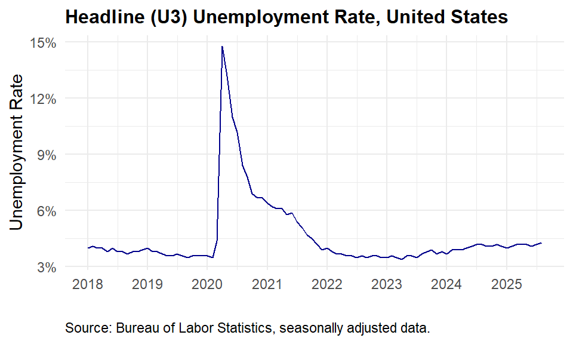
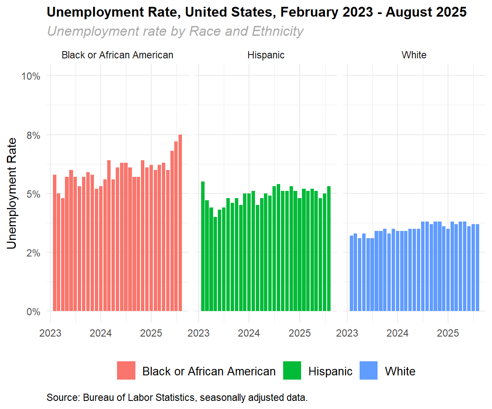

4 Economic Analysis
4.1 Data and the Challenge of Economic Analysis
We are awash in data. The challenge is to find the right data at the appropriate time to investigate an empirical question of interest. In some cases, the data are well defined, consistently formatted, readily available, and structured to facilitate analysis. Then there are data that could help answer a question, but are not in an easily accessible format. But, before tackling these problems, we need to ask the simple question:
What are data?
The Merriam-Webster dictionary defines data as: “…factual information (such as measurements or statistics) used a basis for reasoning, discussion, or calculation.” Broadly speaking, data can consist of measurements regarding the health of individuals, performance of firms, the income of regions, the inflation rate of a national economy, among other things. Data can also consist of statistics that describe the properties of an underlying set of measurements.
The Bureau of Labor Statistics (BLS) defines the civilian labor force as “The labor force includes all people age 16 and older who are classified as either employed and unemployed. Conceptually, the labor force level is the number of people who are either working or actively looking for work.”
How many people are the in the civilian labor force in the United States? How many in Virginia? Is the labor force larger today than it was at the same time last year? How does the growth in the labor force in Virginia compare to other states? All these questions require obtaining data and, for some, manipulating data to create statistics about the properties of the data.
4.2 Headline Unemployment Rate
The headline unemployment rate is an example of a measure that has different values across time. Collectively, these measures are data on the headline unemployment rate. This rate is equal to the ratio of the employed persons in the civilian labor force to the civilian labor force.
In the following figure, we plot the evolution of the unemployment rate over time.
4.3 Unemployment by Race
Data can consist of measurements of a variable across groups of individuals and time. In the following figure, we present the headline unemployment rate by selected racial groups in the United States. Unlike the national unemployment rate which encompasses all individuals in the civilian labor force, each group represents all individuals by race relative to the civilian labor force by race. We can observe how the responsiveness of the unemployment rate differed by race.

4.4 Unemployment Rate for Selected States
In the table below, we obtain data on unemployment rates for Virginia, Maryland, North Carolina, West Virginia, and the United States from https://fred.stlouisfed.org or ‘FRED’.
In the table, each row corresponds to a geography (state or nation) while each column represents a variable for that geography. Note that only the last period available is represented in the table.
| FRED Symbol | Date of Observation | Value | Value in Decimal Form | Geography |
|---|---|---|---|---|
| VAUR | 2025-08-01 | 3.6 | 0.036 | Virginia |
| NCUR | 2025-08-01 | 3.7 | 0.037 | North Carollina |
| WVUR | 2025-08-01 | 3.8 | 0.038 | West Virginia |
| MDUR | 2025-08-01 | 3.6 | 0.036 | Maryland |
| UNRATE | 2025-08-01 | 4.3 | 0.043 | United States |
4.5 Measurement
Referring to the unemployment rate, there are two rows with observations for the selected geographical areas. In other words, the elements are the states on which data are collected and presented in the table. There are six variables in the table: the symbol of the variable from FRED, the date of the observation, the value of the observation, the value of the observation in decimal form, and the geography name of the observation.
The table contains different scales of measurement. The date variable contains information on time while the state variable is measured on the nominal scale. The nominal scale is used to identify the observational data, that is, the data in the table are organized by the geographical area of the observation. The data pertaining to the unemployment rate is ordinal data in that the measurements contain numeric information.
Broadly speaking, data can be classified as categorical or quantitative. In the table, the variable containing the geographical names is categorical. We cannot mathematically manipulate the categorical data (subtracting 1 from Virginia does not produce a meaningful result). We could, however, create a new variable that contains numerical values to represent the categorical data, that is, the new quantitative variable would be a numerical representation of the categorical data.
4.6 Cross-Sectional, Time Series, and Panel Data
There are three broad types of data. Let’s establish some terminology. When we discuss data, we often refer to individuals and time. In this context, individuals can represent people, firms, airlines, cars, or some other characteristic that defines the unique observations.
For example, if we had data on the average fuel mileage of passenger vehicles in 2019, then individuals would refer to each type of passenger vehicle. If we had randomized data on 100,000 taxpayers in Virginia for 2018, then individuals would refer to unique taxpayers. Lastly, if we collected data on airplane arrivals at Dulles International Airport for each day in 2019, then we would have individual observations across time. We could organize this data by plane registration, airline, or country of origin, or some other category of interest.
Cross-sectional data are data collected across individuals at the same point of time. There is no depth to cross-sectional data, that is, the data represent a snapshot at a specific point in time.
Time series data are data collected over several time periods. Data for the headline unemployment graph for the United States are time series data.In this context, time series data refers to one variable across time. One can have a collection of time series variables (inflation rate, unemployment rate, and so on). Time series data has depth but not breadth.
Panel data are data collected across individuals and time. If we collected data for the unemployment rate across states from 2013 to 2025, then we would have individuals (states) and time (months) as defining characteristics of our data. Panel data has breadth (across individuals) and depth (across time).
4.7 Population versus Sample Data
When working with data, a question may arise whether it is appropriate to work with the population or a sample.
The population represents all the individuals for a particular study while a sample is a subset of the population.
Let’s say we wanted to calculate the average age of students at Old Dominion University for the Fall 2025 semester. If we had access to student records, this might be a relatively easy exercise. In other words, if we had access to data for the population of students, we could calculate the average age of the student population.
Now, let’s assume we wanted to calculate the average age for all college students in the United States. The problem has become more difficult. We could try and obtain all the records from all the colleges and universities in the United States but this effort might be costly and complex.
We could instead sample different colleges and universities and construct an estimate of the average age of college students. The “closer” our sample is to the population, the better our estimate of the average age of all the college students in the United States. If we only selected colleges and universities with undergraduate programs, our sample would likely understate the average age of college students. If we only selected graduate programs at colleges and universities, our sample would likely overstate the average age of college students.
The process by which we use a sample to estimate the properties of the population is statistical inference.
Gathering a sample that is representative of the population is the first step. We then must understand the properties of the sample and how this reflects the properties of the population.